4 RNA Integrity Number (RIN): technical background
The complete quality control results for all submitted samples are summarized in Table 4.1, including RNA concentration, total RNA amount, RNA Integrity Number (RIN), and final QC status. Representative electropherograms generated during the analysis are shown in Figure 4.1.

The RNA Integrity Number (RIN) is a numerical score ranging from 1 (fully degraded RNA) to 10 (intact RNA), widely used to assess total RNA quality. RIN values are computed from automated electrophoretic analyses performed on platforms such as the Agilent Bioanalyzer.
The RIN algorithm evaluates multiple features of the electropherogram, including:
- The presence, height, and sharpness of ribosomal RNA peaks (primarily 18S and 28S rRNA in eukaryotes). High-quality RNA typically displays well-defined 18S and 28S peaks with an approximate 2:1 intensity ratio.
- Background signal and degree of fragmentation. Degraded RNA is characterized by reduced or absent ribosomal peaks and increased signal corresponding to low-molecular-weight fragments.
- Overall signal distribution across fragment sizes, reflecting progressive RNA degradation.
In high-quality samples, electropherograms show sharp and well-resolved rRNA peaks with low background noise. In contrast, degraded samples exhibit flattened or missing rRNA peaks and a pronounced accumulation of short RNA fragments.
Most samples exhibited RIN values between 7.0 and 9.8, which are generally considered suitable for RNA-Seq library construction and downstream differential gene expression analyses. RNA concentrations also fell within acceptable ranges for library preparation, although moderate variability among samples was observed.
Two samples deviated from the expected quality standards:
- IT12 showed a low RIN value (3.8), indicating substantial RNA degradation. This sample was classified as Fail and deemed unsuitable for RNA-Seq.
- IT16 displayed an intermediate RIN value of 6.0, suggesting partial degradation that could compromise sequencing quality and data interpretation.
Additionally, ITPNK exhibited slight genomic DNA contamination, as indicated in the Novogene QC report. Despite this observation, the sample passed overall QC criteria.
Given that the sequencing budget covered 24 RNA-Seq libraries and 26 samples were initially submitted, samples IT12 and IT16 were excluded from sequencing. The remaining samples met the quality requirements for transcriptomic analysis and were retained for RNA-Seq library preparation and sequencing.
| No. | Sample | Concentration (ng/µl) | Volume (µl) | Total amount (µg) | RIN | Sample QC Results |
|---|---|---|---|---|---|---|
| 1 | P31 | 1851.34 | 16 | 29.62141 | 7.7 | Pass |
| 2 | P32 | 2022.42 | 16 | 32.35878 | 8.3 | Pass |
| 3 | P33 | 483.84 | 13 | 6.28990 | 8.8 | Pass |
| 4 | P34 | 826.81 | 17 | 14.05583 | 8.8 | Pass |
| 5 | P35 | 430.00 | 16 | 6.87994 | 8.2 | Pass |
| 6 | P36 | 447.89 | 16 | 7.16622 | 7.2 | Pass |
| 7 | P41 | 1270.12 | 16 | 20.32186 | 9.3 | Pass |
| 8 | P42 | 888.98 | 19 | 16.89067 | 8.8 | Pass |
| 9 | P43 | 1343.73 | 19 | 25.53087 | 8.0 | Pass |
| 10 | P44 | 1961.08 | 18 | 35.29941 | 7.8 | Pass |
| 11 | P45 | 709.86 | 18 | 12.77749 | 8.1 | Pass |
| 12 | P46 | 768.56 | 18 | 13.83416 | 8.9 | Pass |
| 13 | P47 | 342.27 | 19 | 6.50313 | 8.5 | Pass |
| 14 | P48 | 404.26 | 17 | 6.87242 | 7.8 | Pass |
| 15 | P49 | 954.50 | 16 | 15.27201 | 8.8 | Pass |
| 16 | P50 | 295.43 | 16 | 4.72680 | 9.6 | Pass |
| 17 | P51 | 2511.00 | 13 | 32.64302 | 9.5 | Pass |
| 18 | P52 | 578.87 | 15 | 8.68312 | 9.8 | Pass |
| 19 | P1G | 150.06 | 16 | 2.40097 | 8.9 | Pass |
| 20 | P2G | 192.33 | 16 | 3.07729 | 9.0 | Pass |
| 21 | PNKD | 417.18 | 18 | 7.50923 | 8.7 | Pass |
| 22 | PNKV | 221.19 | 17 | 3.76027 | 8.4 | Pass |
| 23 | IT12 | 2422.80 | 17 | 41.18753 | 3.8 | Fail |
| 24 | IT16 | 2988.15 | 18 | 53.78664 | 6.0 | Pass |
| 25 | IT1G | 2842.68 | 16 | 45.48292 | 7.8 | Pass |
| 26 | ITPNK | 4493.36 | 18 | 80.88050 | 7.1 | Pass |

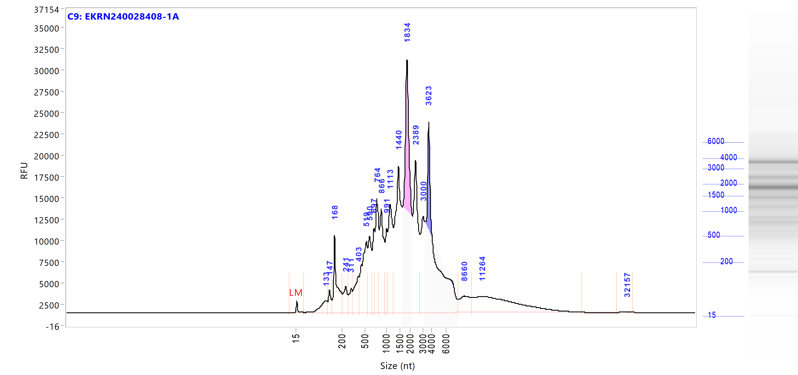
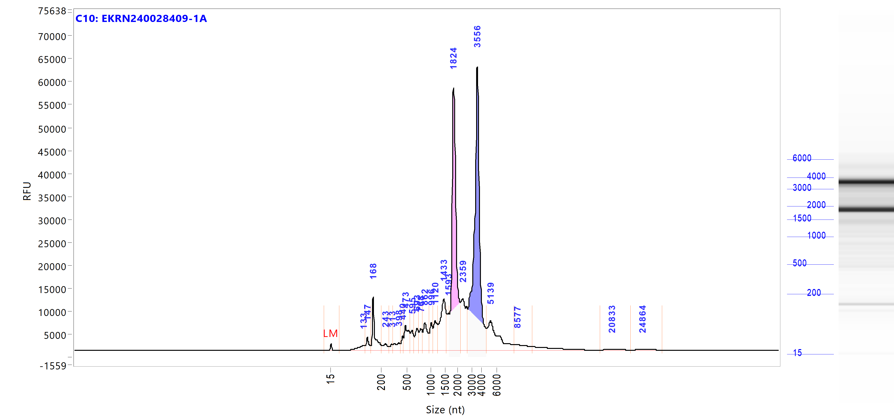
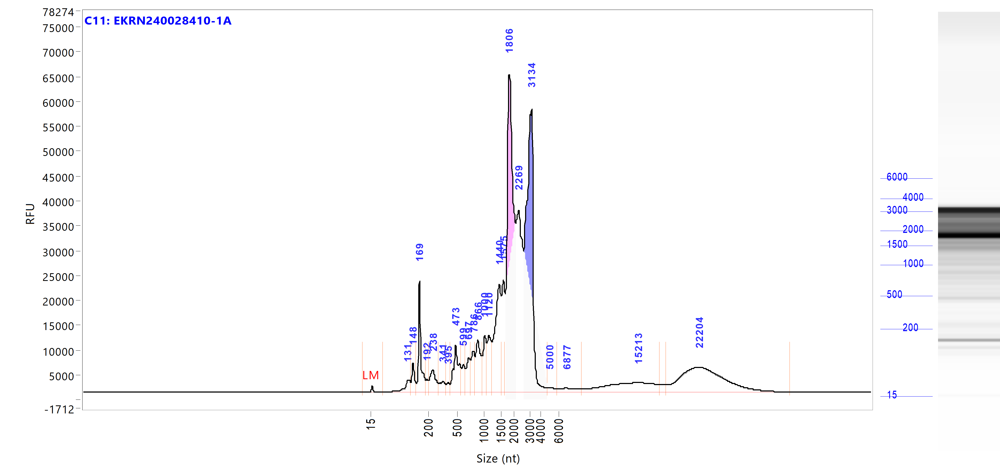
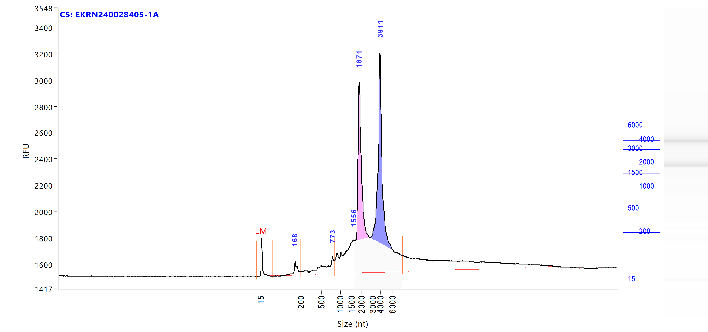


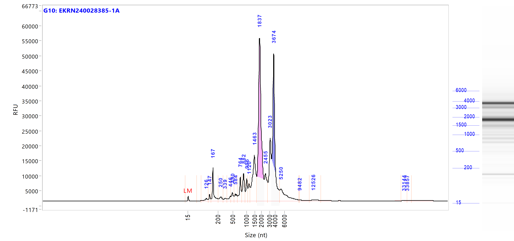

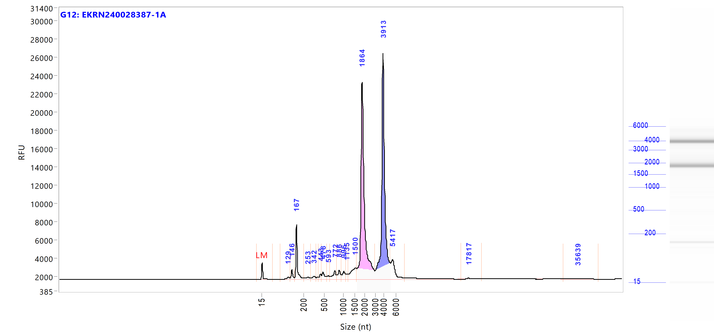


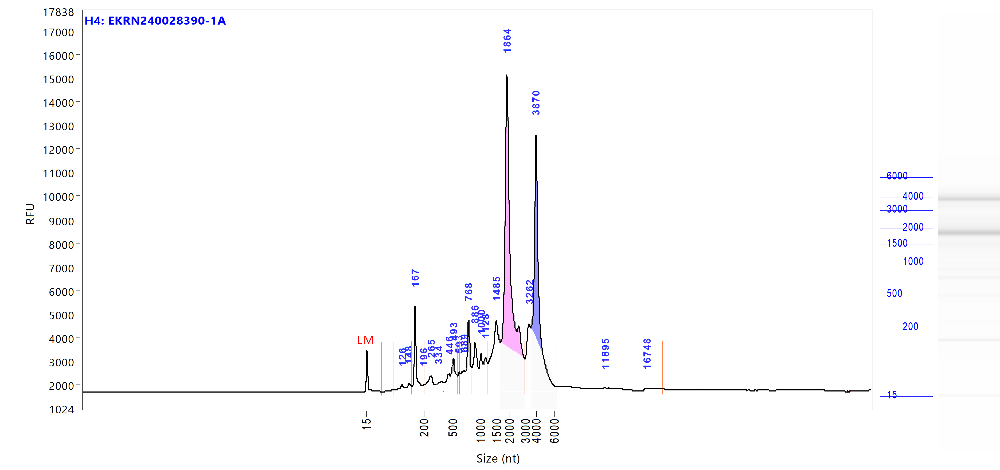
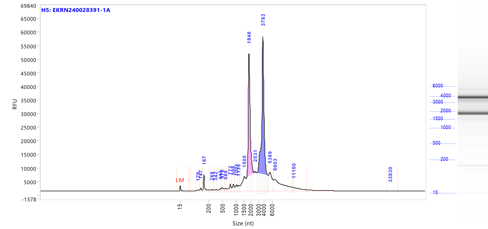
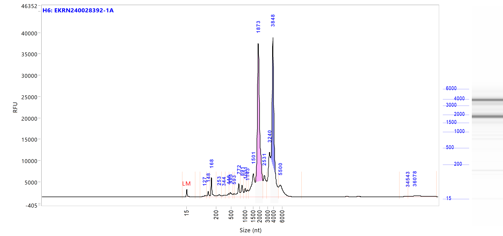
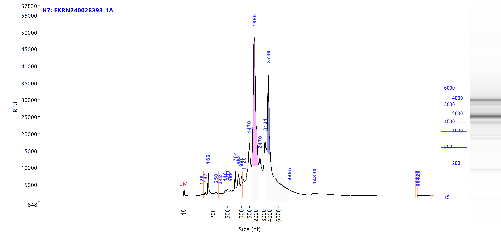
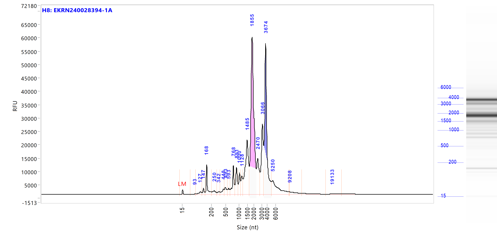
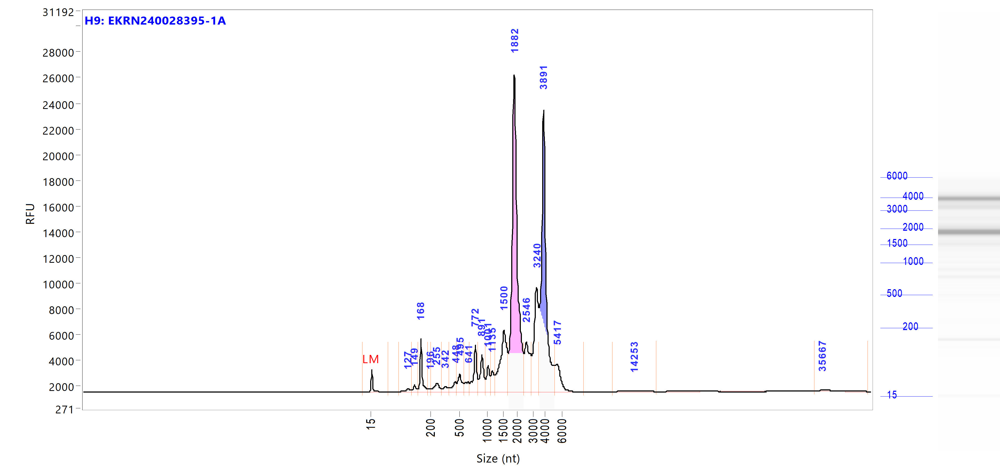


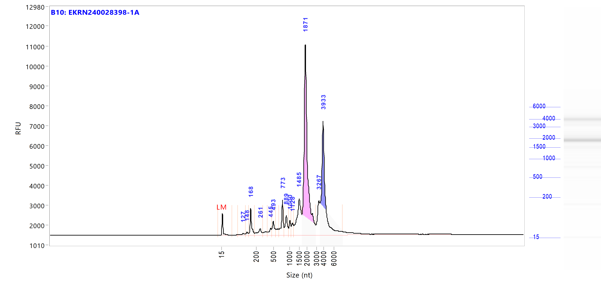
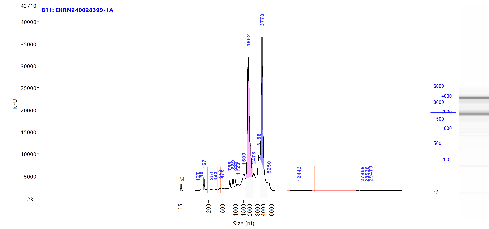

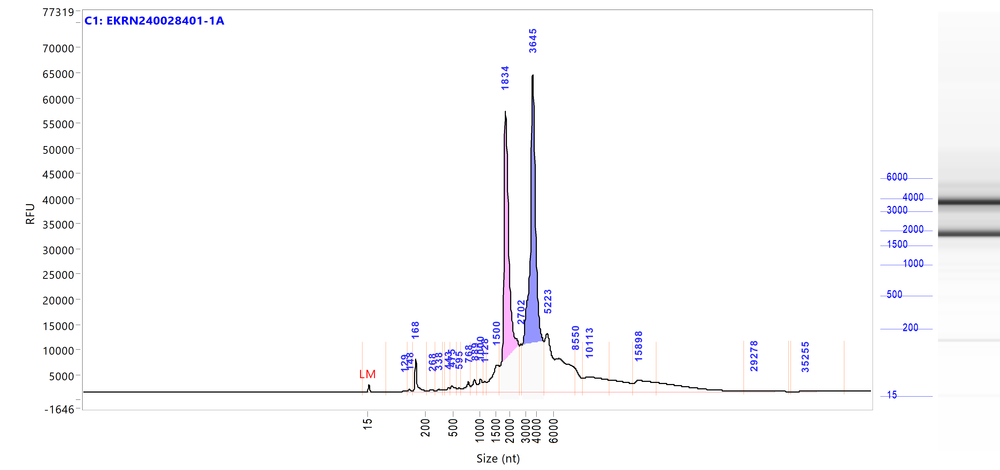

Figure: RNA quality control electropherograms generated using the Agilent 5400 Bioanalyzer. Each tab corresponds to one sample and displays the characteristic 18S and 28S rRNA peaks and fragment size distribution used to assess RNA integrity prior to sequencing.
Q1. What is the influence of RNA concentration on library construction?
RNA concentration determines the total RNA input available for library preparation. Insufficient RNA input may result in low library yield or library construction failure. Additional RNA concentration steps may increase degradation risk.
Q2. Does genomic DNA contamination affect poly(A)-enriched mRNA library preparation?
Genomic DNA is not retained during poly(A) enrichment–based mRNA library preparation. Therefore, low-level genomic DNA contamination does not affect downstream library construction when samples pass QC.
Q3. What RNA purification methods are used and how much RNA loss is expected?
RNA purification is typically performed using column-based or magnetic bead–based methods. RNA loss after purification is expected to be approximately 60%, depending on the purification strategy and initial RNA quality.